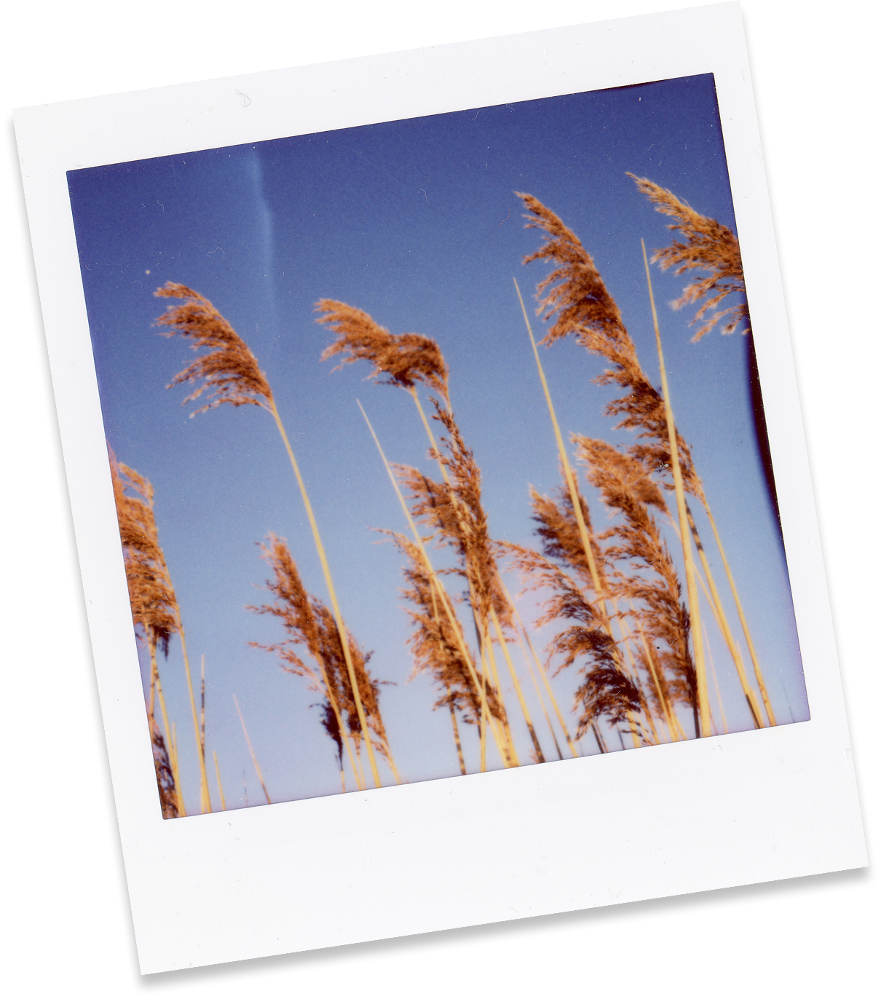
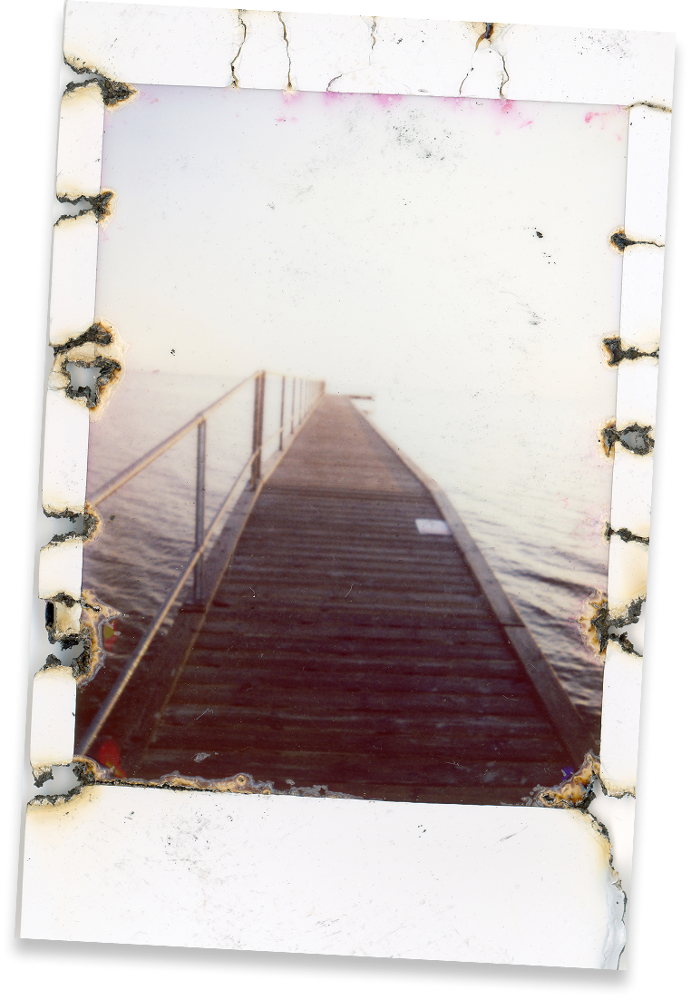
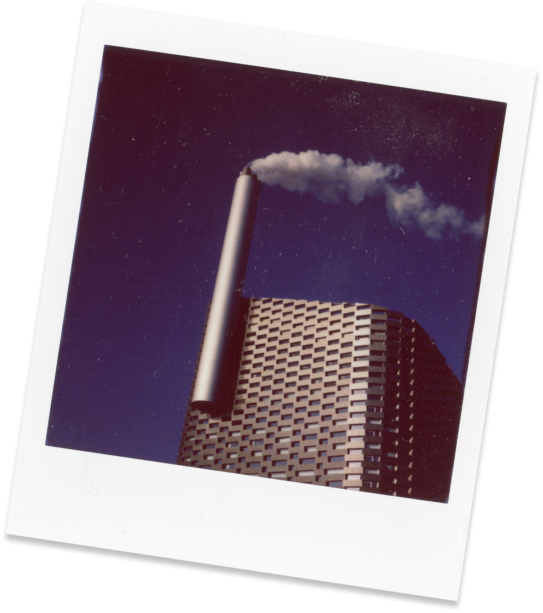
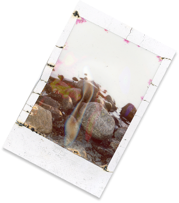
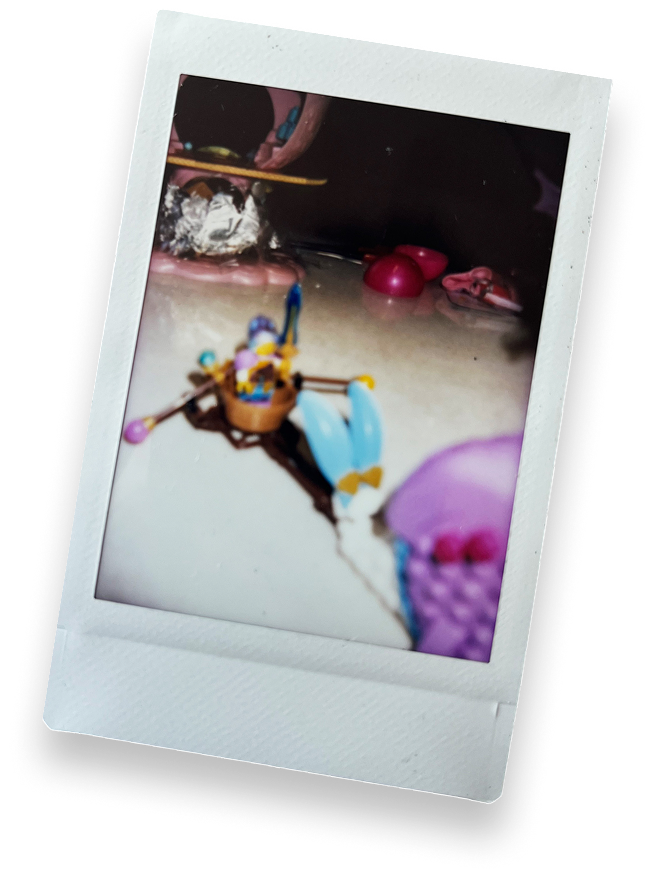
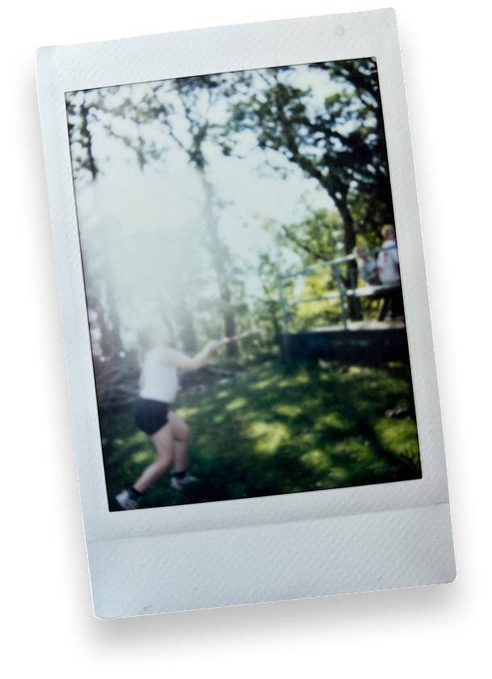
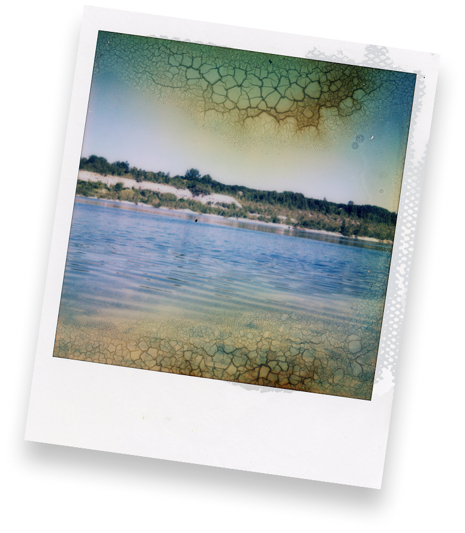

INSTANT UGEN
Kom og vær med til at dele instant fotos!
Uge 42 - d. 12 - d.18 oktober.

Navn: Stefan Grage

Navn: Stefan Grage

Navn: Stefan Grage

Navn: Stefan Grage
Hvad er Instant Ugen?
Kort fortalt er Instant Ugen en hyldest til instant-fotografering; En opfordring til at udforske instant-fotografiets glæder. Instant Ugen foregår to gange årligt: I påsken og efteråret. Så find dit Polaroid-, Instax- eller hvilket som helst andet instant-kamera, frem, og vis os dine instants. Instant Ugen er ikke rigtig en fotokonkurrence, det er mere en hyldest til god gammeldags analog instant-fotografering - alle, der deltager, er vindere :-) Men: Vi har en flot præmie til én heldig instant-fotograf!
Næste Instant Uge løber af staben i uge 42 - d. 12. til den 18. oktober 2026.
Hvorfor instant foto?
Instant foto er et vidnesbyrd om livet. Det hele startede tilbage i 1940'erne. Edwin Land fotograferede livets begivenheder, og en dag på stranden med sin 3-årige datter, gjorde hun opmærksom på, at hun ville se billederne med det samme! Edwin satte sig selv en stor opgave: At opfinde en film, der kunne fremkalde sig selv. Hurtigt.
Et halvt årti senere etablerede Edwin Land virksomheden Polaroid, som nu om dage nærmest er synonymt med Instant foto. Instant foto blev til en omfattende forretning i 70'erne og 80'erne, indtil den digitale æra næsten slog hele branchen ihjel. Nu er instant foto stærkt på vej tilbage: Den enorme mængde tid spildt bag skærme har ansporet en modreaktion: Analoge, offline oplevelser er blevet populære igen. Og instant foto er netop det: En analog, livsbekræftende og taktil fotooplevelse. Så lad os fejre livet og skabe minder :-)
Sådan deltager du
1. Tag et billede
Tag et billede af dit instant foto med din smartphone (eller scan det for en bedre kvalitet) - filen skal være mellem 2-10 MB, i jpg/jpeg - eller webp-format.
2. Upload dit billede + info
Upload dit billede og dit navn + kontaktinfo på "Del dine instants"-siden.
3. Accepter vilkår og betingelser
Accepter vilkår og betingelser for konkurrencen, som du kan finde i bunden af formularen, på siden "del dine instants"-siden. (Kort sagt: Deltagere skal være over 18 år, portrætterede personer skal have givet samtykke, og du accepterer, at dit instant foto må udstilles og bruges til at promovere fotokonkurrencen.)
4. Max 5 bidrag
Du kan indsende op til 5 bidrag - gennemgå trin 1-3 for hver indsendelse ;-)

Navn: Stefan Grage
Navn: Stefan Grage
Navn: Stefan GrageInspiration
Du kan også få en masse inspiration fra kunstfotografi-scenen. Hvis du er interesseret i at få lidt ekstra inspiration kan du åbne nedenstående fold-ud menuer, for at få mere information samt links.
DAN ISAAC WALLIN ▼
Dan Isaac Wallin er en svensk kunstfotograf, der bruger storformatkameraer og vintage polaroidkameraer til sine værker. Hans værker hænger også i adskillige huse som plakater.
METTE KELTER ▼
Mette Kelter er en dansk kunstfotograf, der ofte eksperimenterer med bevidst ødelæggelse af den kemiske proces i instant-fotos. Et af nøgleordene her er uforudsigelighed i arbejdsprocessen, hvilket fører til interessante og unikke kunstværker.
MARIPOL ▼
Maripol er en fransk kunstner/fotograf/filmproducer. Hun blev berømt i 1980'erne, hvor hun fotograferede berømte personer med et Polaroid SX-70. Hendes fotografier er stadig meget indflydelsesrige i modebranchen.
THE POLAROID COLLECTION ▼
The Polaroid Collection var en stor samling instant fotos samlet af Polaroid Corporation. Den indeholdt værker fra en række berømte fotografer, herunder eksempelvis Ansel Adams. Samlingen blev splittet op i forskellige dele og sat på auktion, da Polaroid Corporation gik konkurs i 2008. Heldigvis kan man finde bøger med fotografier fra samlingen, for eksempel Polaroidbogen af Steve Crist og Barbara Hitchcock.